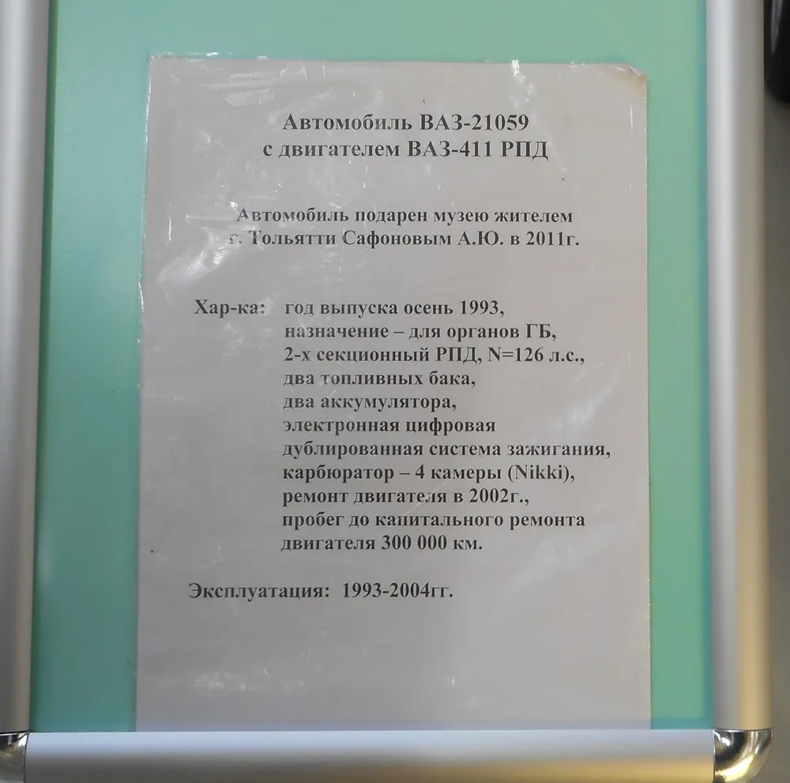
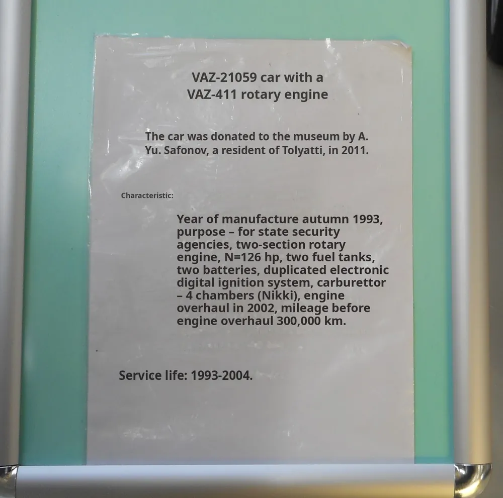

Книги
Целиком, главу за главой
Книги, научные статьи, документы и видео с субтитрами.
Целиком, главу за главой
Формулы и цифры на месте
С готовыми субтитрами
Прочитаем даже текст на картинке
Нажимайте и смотрите.


Нажмите на нужный, и начнём.
Документ, книгу или видео
Любой из списка
В том же виде, что и оригинал
Таблицы, картинки и шрифты на своих местах.
Каждое число и единицу сверяем с оригиналом.
Одно слово переводится одинаково на всех страницах.
Перевела учебник на 300 страниц за один день. Таблицы остались на месте.
Субтитры к лекции на трёх языках. Студенты наконец всё понимают.
Первая страница бесплатно
Это макет. На сайте файл сразу откроется в редакторе с выбранными языками.